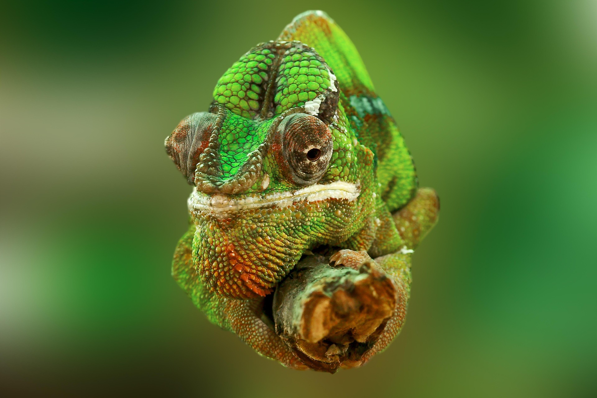

(Chamaeleonidae)
El camaleón es un reptil conocido por su capacidad de cambiar de color, su lengua extensible y su excelente visión. Históricamente ha fascinado a los humanos por su camuflaje y hábitos singulares, y cumple un papel importante en los ecosistemas al controlar poblaciones de insectos. Gracias a su agilidad y sentidos desarrollados, los camaleones pueden cazar presas con precisión, detectar depredadores y adaptarse a diferentes entornos. Dependiendo de la especie, su esperanza de vida oscila entre 5 y 10 años, necesitando hábitats con vegetación, humedad adecuada y alimentación rica en insectos. Los camaleones presentan gran diversidad de tamaños, colores y hábitos, siendo capaces de desplazarse lentamente mientras permanecen casi invisibles para sus presas y depredadores.
Características